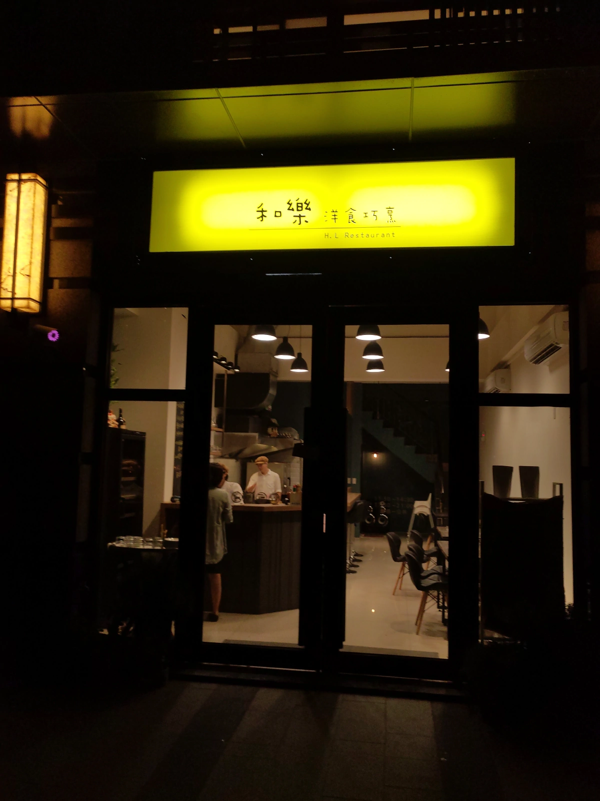
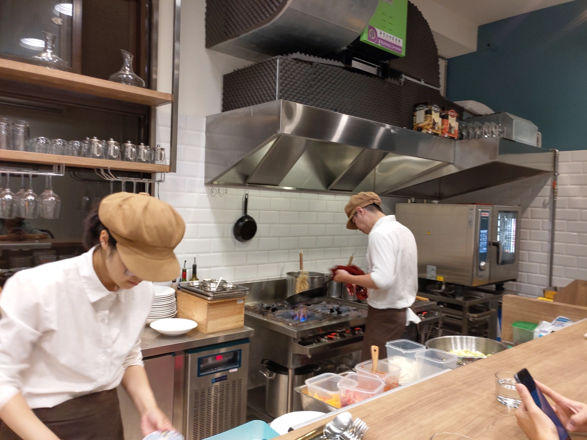
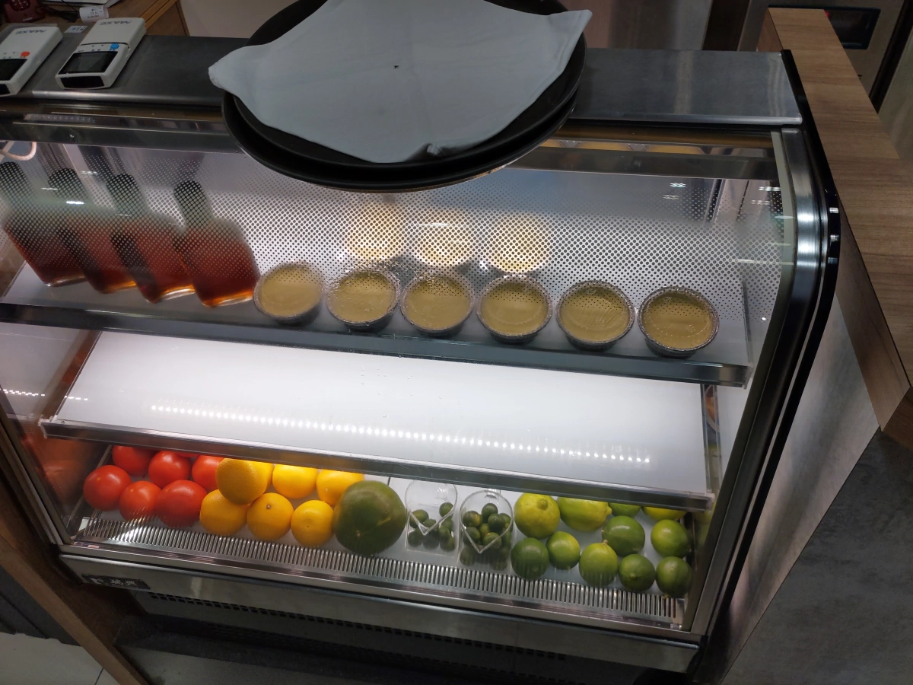
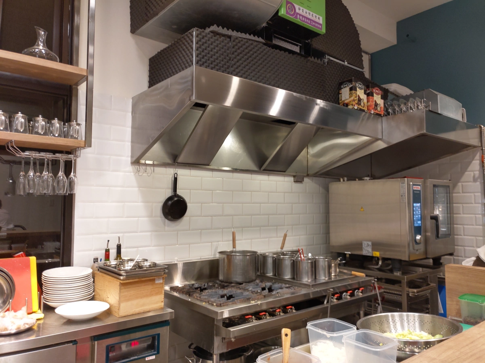
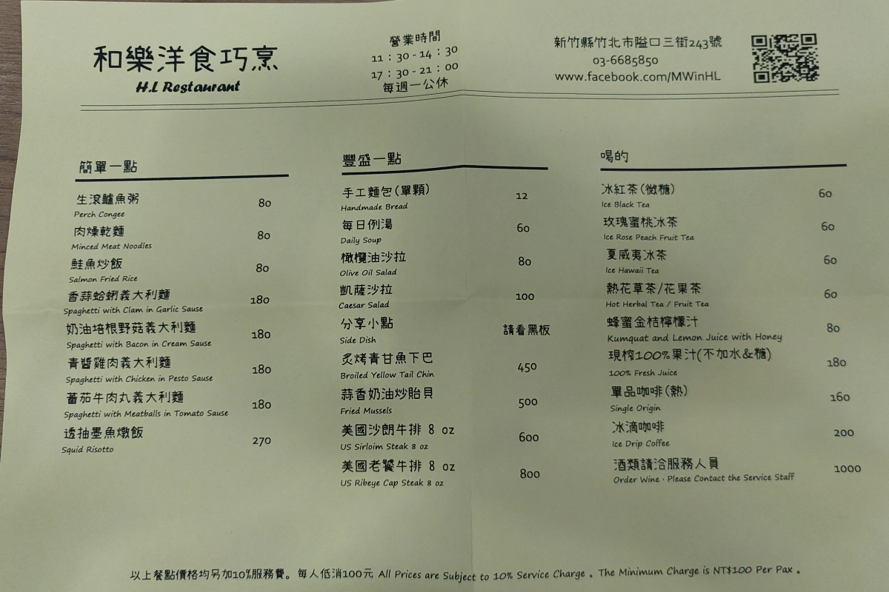
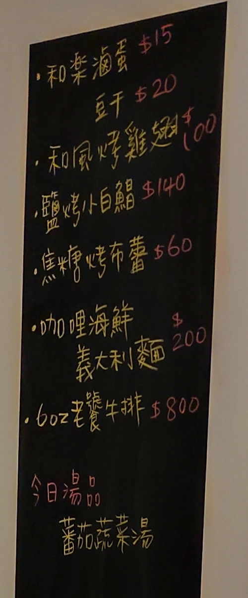
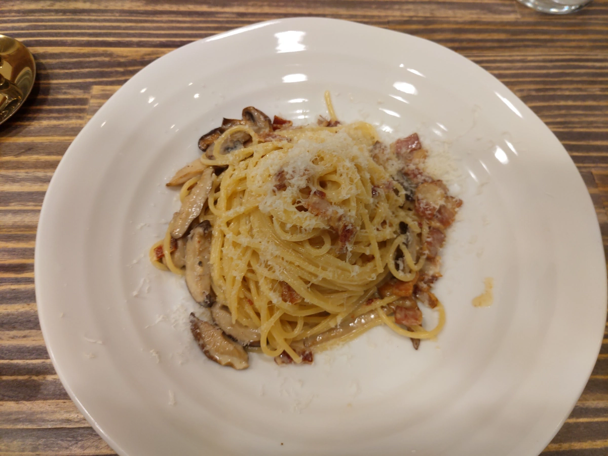
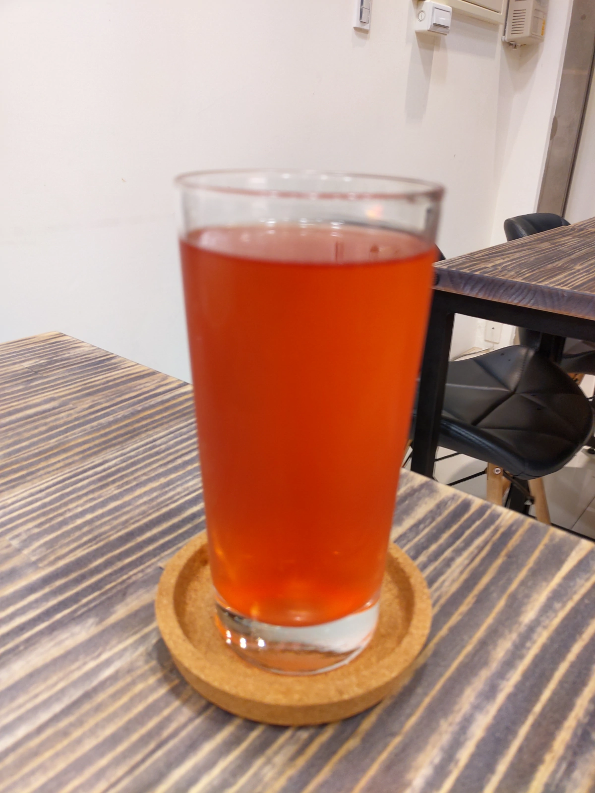
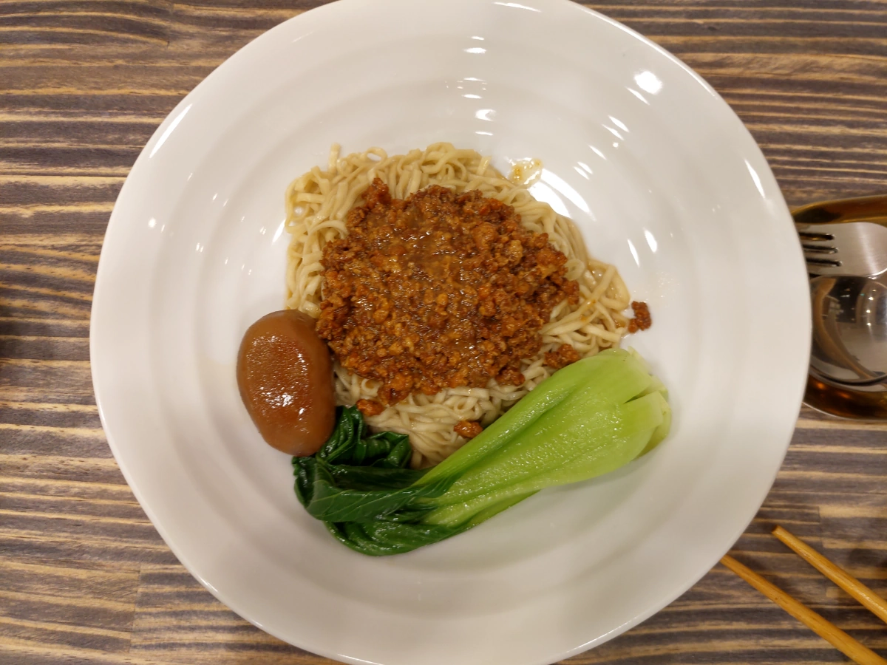
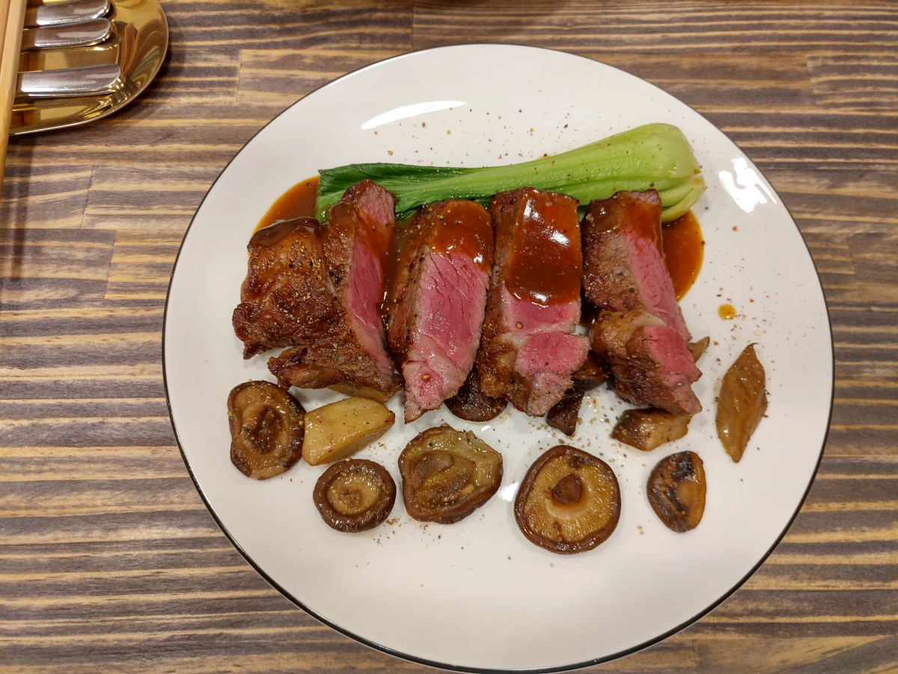

[竹北] 五星小廚2.0：和樂洋食巧烹
| 餐廳名稱: | 五星小廚2.0：和樂洋食巧烹 |
|---|---|
| 地 址: | 新竹縣竹北市隘口三街243號 |
| 營業時間: | 週二 ~ 周日 11:30 ~ 14:30 17:30 ~ 21:00 |
| 週一 公休 | |
| 電 話: | 03 668 5850 |
逛網路時發現這間 五星小廚 有點特色，本來是在竹東夜市的攤販，聽說一開始是賣便宜好吃的濃湯捲， 我也不知道那是什麼東西，但聽說口碑不錯。後來就不賣濃湯捲，改賣500元的牛排，雖然他應該是因為用 好的食材而賣到500元，可是當然就有酸民開罵或是懷疑食材等級。然後竹東夜市不知道有什麼變動， 他們就乾脆來竹北找店面，改在竹北發展，也就是這間五星小廚第二代了。
五星小廚2.0：和樂洋食巧烹 相對第一代，菜單應該變化很大，畢竟是店面了。今天有空閒，終於來 試試了，首先 附近剛好是停車場，太方便了。招牌只有 “和樂洋食巧烹” 幾個大字，“五星小廚2.0” 只有在FB出現。約19:30 到，竟然客滿，只好先坐吧台。大約 20 分鐘後，才空出一桌，之後人來來去去， 才開始漸漸的空下來，尖峰時段過了。 
先來一張老闆與老闆娘工作的照片，看起來沒有請人，小倆口自己拚。 
甜點櫃，不確定是自製甜點，還是外面找來的，不過今天沒有點甜點。 
剛好抓到一個 沒人的時機，拍下這張照片。 
菜單，“簡單一點” 的前三道，竟然是中式的餐點。不但如此，周圍瞄了一下，兩三位點 肉燥乾麵。 
牆壁上有些新菜。

奶油培根野菇義大利麵，個人偏好白醬，很容易覺得好吃，事實上也覺得好吃。 
玫瑰蜜桃冰茶，還不錯喝。 
這就是西餐廳裡面出現的中式麵點 - 肉燥乾麵，有附滷蛋和青菜。滷蛋有入味，跟小菜的滷蛋豆干是一樣的。肉燥鹹香好吃，拌麵正適合。 很多人點，感覺來吃這碗麵的，似乎都是附近住戶，晚餐就吃這個解決。 不過只吃一碗麵，沒到低消啊，似乎老闆睜一隻眼、閉一隻眼， 而且其中一位是單獨一人，吧檯吃一吃就走了，沒佔桌子，老闆好像就不計較了。 
莎朗牛排，那個醬汁是不錯，味道濃郁，沾牛排吃是不錯。不過我吃很多家牛排了，這裡的牛排，稍微好吃而已，煎牛排的技巧不多， 這裡也沒問要幾分熟。本來還以為他在竹東夜市是賣多厲害的牛排，看起來想太多了，牛排差不多就這樣了。可能肉燥乾麵、義大利麵，烹調 手續還多很多道步驟，還特殊一點。 
蜂蜜金桔檸檬，又酸又甜，好喝。

整間店感覺有點溫馨，老闆娘兼外場，有笑容，態度很好，雖然忙來忙去，講一下都會處理。老闆很少出來，嚴肅地努力烹調， 食物的味道也不錯，有機會會再訪。